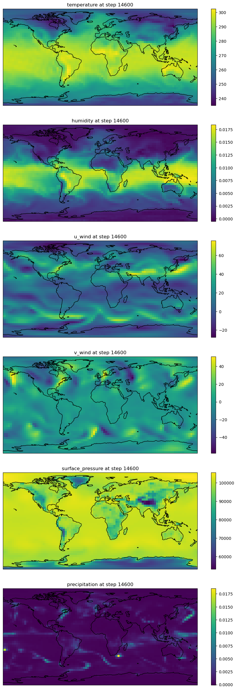
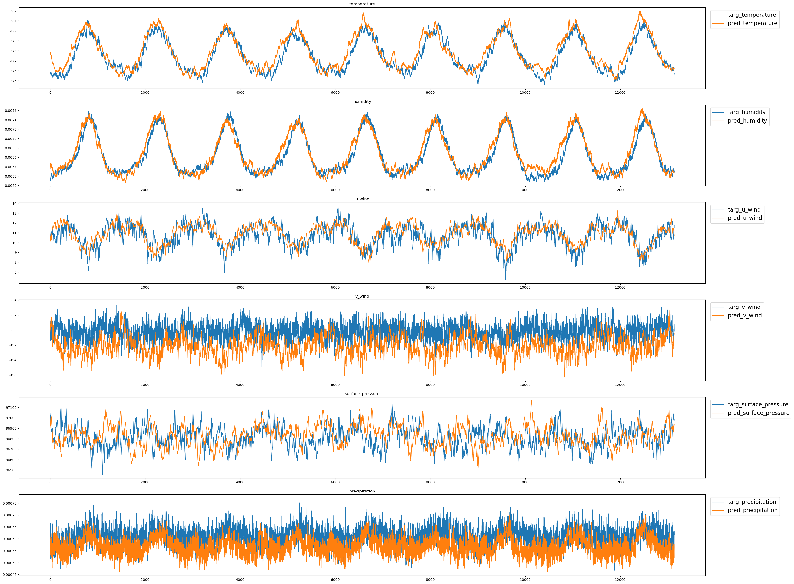

!module listCurrently Loaded Modulefiles:
1) openmpi/4.1.5 2) singularity 3) NCI-ai-ml/25.07 4) pbs Currently Loaded Modulefiles:
1) openmpi/4.1.5 2) singularity 3) NCI-ai-ml/25.07 4) pbs from math import ceil
import matplotlib.pyplot as plt
import cartopy.crs as ccrs
import torch
import sys,os,time
nb_dir="/g/data/dk92/notebooks/examples-aiml/lucie"
sys.path.append(f"{nb_dir}/models")
from torch_harmonics_local import *
from LUCIE_inference import inference
device = torch.device('cuda:0' if torch.cuda.is_available() else 'cpu')
if torch.cuda.is_available():
torch.cuda.set_device(0)# load the normalization scalars from the original work
data = np.load(f"{nb_dir}/datasets/era5_T30_preprocessed.npz") # standardized data with mean and stds generated from dataset_generator.py
data_inp = torch.tensor(data["data_inp"],dtype=torch.float32) # input data
data_tar = torch.tensor(data["data_tar"],dtype=torch.float32)
raw_means = torch.tensor(data["raw_means"],dtype=torch.float32).reshape(1,-1,1,1).to(device)
raw_stds = torch.tensor(data["raw_stds"],dtype=torch.float32).reshape(1,-1,1,1).to(device)
prog_means = raw_means[:,:5]
prog_stds = raw_stds[:,:5]
diag_means = torch.tensor(data["diag_means"],dtype=torch.float32).reshape(1,-1,1,1).to(device)
diag_stds = torch.tensor(data["diag_stds"],dtype=torch.float32).reshape(1,-1,1,1).to(device)
diff_means = torch.tensor(data["diff_means"],dtype=torch.float32).reshape(1,-1,1,1).to(device)
diff_stds = torch.tensor(data["diff_stds"],dtype=torch.float32).reshape(1,-1,1,1).to(device)# initialize the SFNO model
grid='legendre-gauss'
nlat = 48
nlon = 96
hard_thresholding_fraction = 0.9
lmax = ceil(nlat / 1)
mmax = lmax
modes_lat = int(nlat * hard_thresholding_fraction)
modes_lon = int(nlon//2 * hard_thresholding_fraction)
modes_lat = modes_lon = min(modes_lat, modes_lon)
sht = RealSHT(nlat, nlon, lmax=modes_lat, mmax=modes_lon, grid=grid, csphase=False)
radius=6.37122E6
cost, quad_weights = legendre_gauss_weights(nlat, -1, 1)
quad_weights = (torch.as_tensor(quad_weights).reshape(-1, 1)).to(device)
model = SphericalFourierNeuralOperatorNet(params = {}, spectral_transform='sht', filter_type = "linear", operator_type='dhconv', img_shape=(48, 96),
num_layers=8, in_chans=7, out_chans=6, scale_factor=1, embed_dim=72, activation_function="silu", big_skip=True, pos_embed="latlon", use_mlp=True,
normalization_layer="instance_norm", hard_thresholding_fraction=hard_thresholding_fraction,
mlp_ratio = 2.).to(device)
gadi=False
if gadi:
#load checkpoint trained on Gadi
print("loading LUCIE checkpoint trained on Gadi")
pth = torch.load(f'{nb_dir}/checkpoints/nci_rep_lucie_340.pt')
model.load_state_dict(pth["model_state_dict"])
else:
print("loading original LUCIE checkpoint")
pth = torch.load(f'{nb_dir}/checkpoints/regular_8x72_fftreg_baseline.pth')
model.load_state_dict(pth)
# run rollout for 10 years
forcing = data_inp[:1460,-2:] # repeating tisr and constant oro
rollout_step = 14600 # 10y of rollout
initial_frame_idx = 16000+100
forcing_initial_idx = (16000+100) % 1460 + 1
rollout = inference(model, rollout_step, data_inp[initial_frame_idx].unsqueeze(0).to(device), forcing.to(device), forcing_initial_idx, prog_means, prog_stds, diag_means, diag_stds, diff_stds)
print(rollout.shape)loading original LUCIE checkpoint/g/data/dk92/notebooks/examples-aiml/lucie/models/torch_harmonics_local.py:1242: FutureWarning: `torch.cuda.amp.autocast(args...)` is deprecated. Please use `torch.amp.autocast('cuda', args...)` instead.
with amp.autocast(enabled=False):
/g/data/dk92/notebooks/examples-aiml/lucie/models/torch_harmonics_local.py:1263: FutureWarning: `torch.cuda.amp.autocast(args...)` is deprecated. Please use `torch.amp.autocast('cuda', args...)` instead.
with amp.autocast(enabled=False):(14600, 6, 48, 96)# prepare for visualization
def generate_t30_grid():
# T62 Gaussian grid parameters
nlat = 48 # Number of latitudes
nlon = 96 # Number of longitudes
# Gaussian latitudes and weights
latitudes, weights = np.polynomial.legendre.leggauss(nlat)
latitudes = np.arcsin(latitudes) * (180.0 / np.pi) # Convert to degrees
# Longitudes
longitudes = np.linspace(0, 360, nlon, endpoint=False)
return latitudes, longitudes
lat, lon = generate_t30_grid()
vars = ['temperature', 'humidity', 'u_wind', 'v_wind', 'surface_pressure', 'precipitation']
nvars=len(vars)
Lon, Lat = np.meshgrid(lon, lat)#results from Yue's checkpoint
# path = torch.load(f'{wdir}/checkpoints/136618981.gadi-pbs/regular_training_checkpoint.pth')
# model.load_state_dict(path)
# better checkpoint
#path = torch.load(f'{wdir}/checkpoints/137286020.gadi-pbs/lucie_205.pt')
#path = torch.load(f'{wdir}/checkpoints/137478626.gadi-pbs/lucie_158.pt')
#path = torch.load(f'{wdir}/checkpoints/138987659.gadi-pbs/lucie_340.pt')
#model.load_state_dict(path["model_state_dict"])
#rollout = inference(model, rollout_step, data_inp[initial_frame_idx].unsqueeze(0).to(device), forcing.to(device), forcing_initial_idx, prog_means, prog_stds, diag_means, diag_stds, diff_stds)
# visualize the final timestep of each ouptut var
w,h = 12,5
fig,axs = plt.subplots(nvars,1, figsize=(w,h*nvars),subplot_kw={'projection': ccrs.PlateCarree()},squeeze=False)
Lon, Lat = np.meshgrid(lon, lat)
for ii in range(nvars):
pcm = axs[ii,0].pcolormesh(Lon,Lat,rollout[-1,ii,:,:])
axs[ii,0].coastlines()
axs[ii,0].set_title(f"{vars[ii]} at step {rollout.shape[0]}")
fig.colorbar(pcm, ax=axs[ii])
tensor(18.2533, device='cuda:0')[('temperature', 0.0021463886369019747),
('humidity', 0.09310100972652435),
('u_wind', 2.2337892055511475),
('v_wind', 2.5637850761413574),
('surface_pressure', 0.001107409130781889),
('precipitation', 0.14571672677993774)]fig,axs = plt.subplots(nvars,1, figsize=(w*3,h*nvars))
for ii in range(nvars):
pcm1 = axs[ii].plot(true_clim_t[:,ii],label=f"targ_{vars[ii]}")
pcm2 = axs[ii].plot(pred_clim_t[:,ii],label=f"pred_{vars[ii]}")
axs[ii].set_title(f"{vars[ii]}")
axs[ii].legend(loc='upper left', bbox_to_anchor=(1.003, 1),fontsize=16)
/g/data/dk92/notebooks/examples-aiml/lucie/modified_training.ipynb and generate the 10-year inference for its model with the checkpoints nci_mod_lucie_193.pt and/or nci_mod_lucie_219.pt inside the directory /g/data/dk92/notebooks/examples-aiml/lucie/checkpoints/